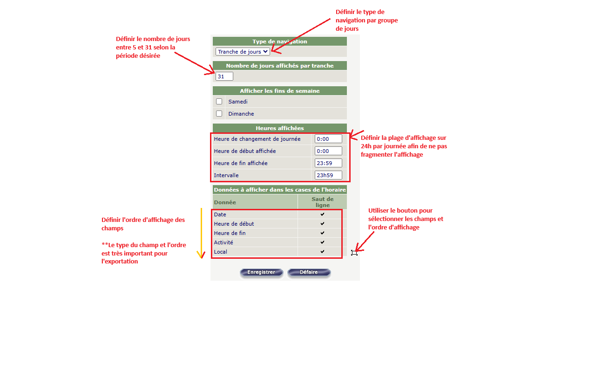

 Assurez-vous de bien configurer l'affichage hebdomadaire de l'horaire dans le système TOSCA.net sans fragmentation quotidienne. Consultez l'image des options de configuration de l'horaire enseignant pour avoir plus de détails.
Procédure pour obtenir les données de l'horaire en format iCal et télécharger le fichier localement :
Après le téléchargement, importer le fichier iCal dans l'agenda Outlook Web ou Google Calendar.
Pour les autres je n'ai pas testé...Bonne chance !
Voir les vidéos sur Youtube pour obtenir plus d'information